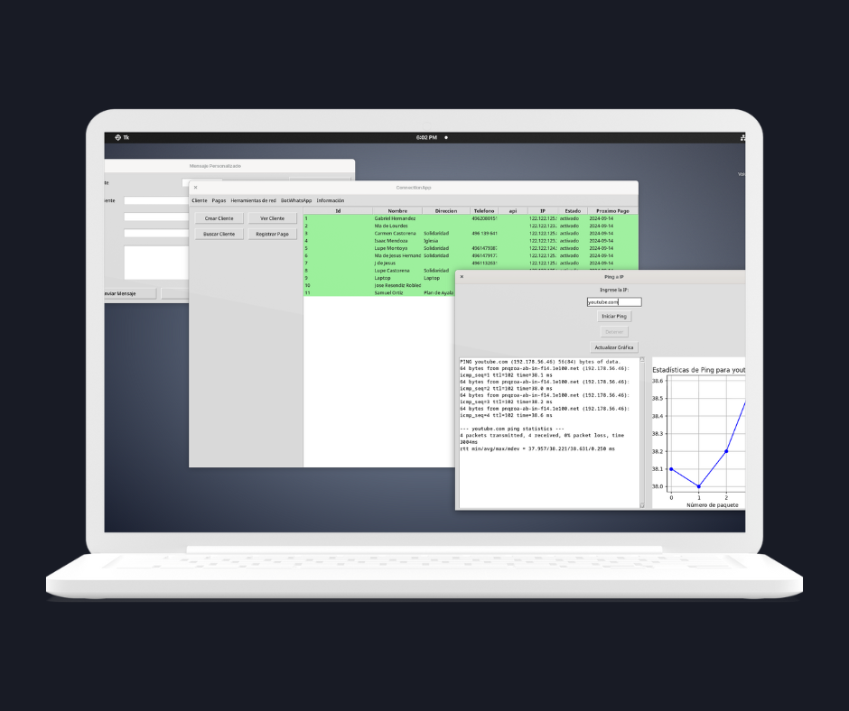
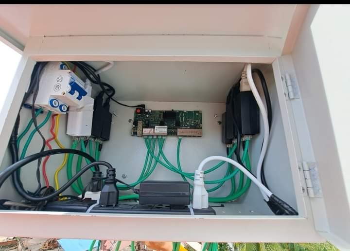
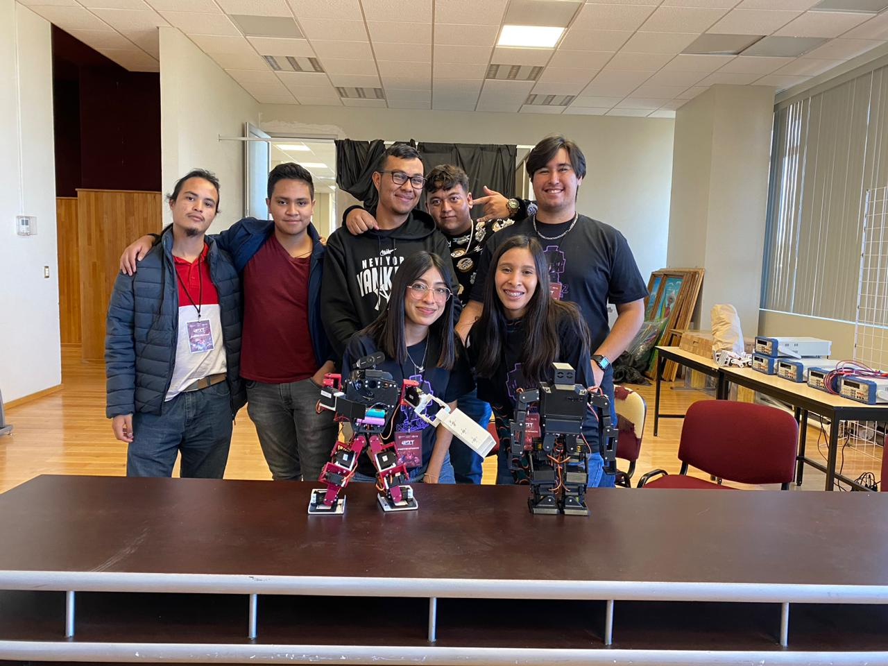
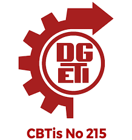
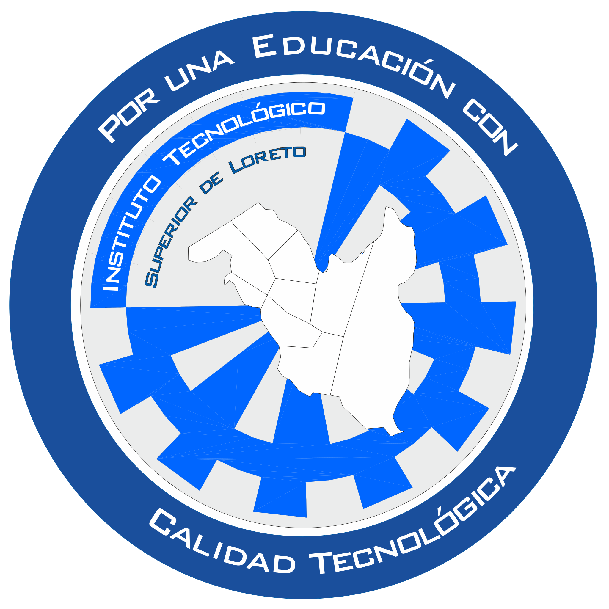

Acerca de mí
Soy un Ingeniero en Sistemas Computacionales apasionado por la tecnología y la innovación. Mi enfoque se centra en el desarrollo de soluciones tecnológicas que resuelvan problemas reales, combinando conocimientos en electrónica, programación y redes.
Con una sólida formación técnica y un compromiso con la excelencia, me especializo en:
Proyectos Destacados

ConnectionApp
Sistema integral de gestión para proveedores de servicios de internet (WISP/ISP), con control de ancho de banda y generación de recibos.

Wisp DOBLENET
Implementación de red inalámbrica para proveer servicios de internet a una comunidad local, incluyendo gestión de usuarios y monitoreo.

BotChallenge - Arnold T-800
Robot controlado por ESP32 con reconocimiento facial mediante Raspberry Pi, demostrando la integración de hardware y software.
Habilidades Técnicas
Educación

CBTIS 215
Bachillerato técnico en Electrónica
Formación fundamental en electrónica y programación

Instituto Tecnológico Superior de Loreto
Ingeniería en Sistemas Computacionales
Especialización en desarrollo de software y redes